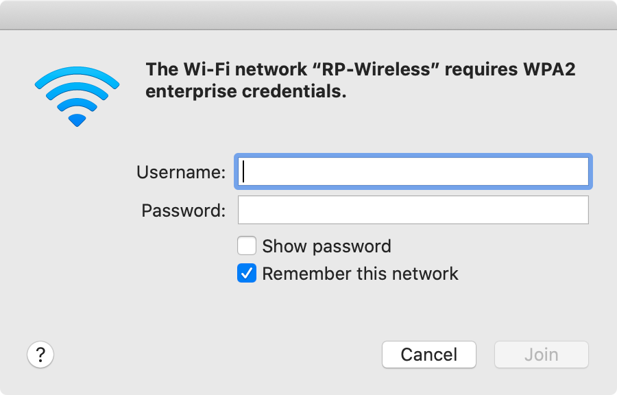

https://support.apple.com/en-sg/explore/new-to-mac
macOS is a Unix-based operating system by Apple which runs on Mac
The current version is Catalina (10.15)
What you'll learn
What you'll need
Mac running macOS Catalina (10.15)
https://support.apple.com/en-us/HT203001
Choose Apple menu > About This Mac to get an overview of your Mac, including your Mac model, processor, memory, serial number, and version of macOS . To see more details, click the System Report button.
https://support.apple.com/en-us/HT204014
search for installed applications, files, etc.
similar to Windows search box in Windows
click the magnifying glass in the top right-hand of the screen or press CMD-Space to bring up Spotlight Search
Click on the Wi-Fi symbol in the menu bar and select RP-Wireless
Enter your credentials for RP-Wireless
Upon successful connection, the Wi-Fi symbol in the menu bar should be at full strength

Use Spotlight Search to search for and launch Check Point Identity Agent
Enter your credentials for Check Point Identity Agent
Upon successful connection, the Check Point Identity Agent symbol in the menu bar should be an open umbrella
https://support.apple.com/en-sg/guide/mac-help/mchlp1446/mac
Apple menu - contains commands for things you do frequently; see What's in the Apple menu?
App menus - the name of the app you're using appears in bold, followed by other menu options for that app
Status menus - check the status of your Mac or quickly access features
Spotlight - search for items on your Mac and more
Siri - Siri
Notification Center - view details about your day and catch up on notifications you missed
https://support.apple.com/en-sg/guide/mac-help/mh35859/mac
similar to Task Bar in Windows
click the app icon to launch the app or bring the app to the foreground
to keep in dock, right-click app in Dock, select Options > Keep in Dock
to remove from dock, right-click app in Dock, select Options > Remove from Dock, or drag app icon to trash bin
https://support.apple.com/en-sg/HT201732
similar to Windows Explorer in Windows
Action
Steps
to rename a file
select the file and press return on the keyboard
to open a file
double-click the file or select the file and press ⌘-Down Arrow
to expand a zip file
open the file
to compress a file or folder
right click the file or folder and select the Compress option
to create a new folder
right-click in the Finder window, select New Folder or press ⌘-Shift-N
https://support.apple.com/en-us/HT201276
similar to the Task Manager in Windows
Choose Apple menu > Force Quit... or press ⌘-Option-Escape to show the list
select the app to force quit and press Force Quit
https://support.apple.com/en-sg/HT201236
Legend
⇧ - Shift
⌘ - Command
⌥ - Option
⌃ - Control
Frequently used shortcuts
Spotlight search
⌘-space
Copy
⌘-C
Paste
⌘-V
Switch between opened apps
⌘-tab
Force quit applications window
⌘-⌥-escape
Screenshot
⌘-⇧-5
https://support.apple.com/en-sg/HT201361
Capture entire screen
Capture selected window
Capture selected portion
Record entire screen
Record selected portion
https://support.apple.com/kb/PH25594